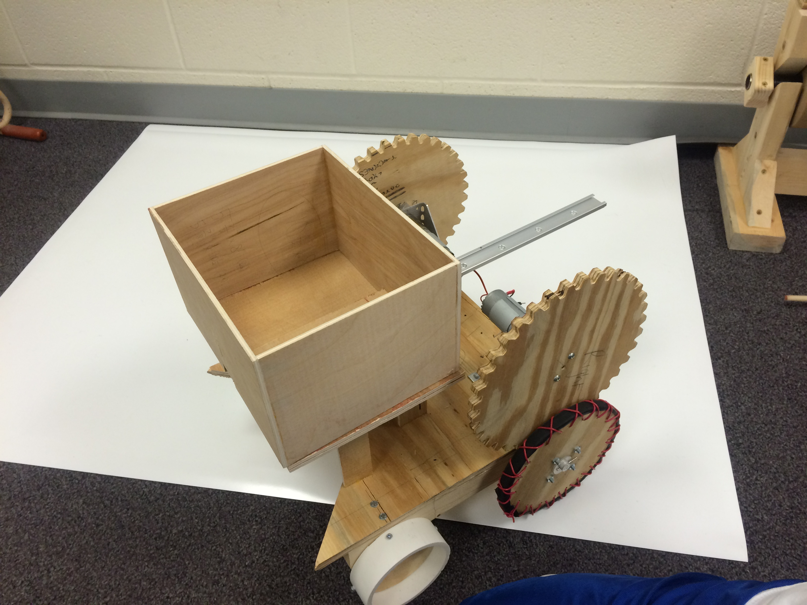

Meet this year’s Robot: The Farminator. Equipped with two wheels, one arm, a shovel and a bucket, this is the finest robot for the job. This robot will help you with all your farming needs from everything, starting from planting corn, to gathering pigs. Countless hours of creative brainstorming and meticulous designing has lead way for us to provide the most advanced robot available in the area.
Wheels pic
Made from wood, the Farminator uses two wheels to maneuver the course. This is for optimal precision and control when carefully completing agricultural tasks. Our superior two wheel design allows the robot to make swift 360° turns. The movements are precisely controlled using 2 large Motors independently attached to each of the wheels.
Arm
The farminator also has one arm, allowing superb control for picking up corn. The arm is controlled using one small arm for rotating, and two servos for pinching and rotating. In unison, these three motors provide unparalleled ability to pick up objects.
Bucket
The Farminator is also equipped with a bucket, for simple, reliable transportation of any items around the farm. This bucket is controlled using one small motor, pushing it in and out to move items.
Rotator
The most revolutionary aspect of the robot is a small servo to rotate the valve in order to control the water. Our team of designers devised a small piece of plastic is attached to the servo to provide quick, superior handling when adjusting the valve.